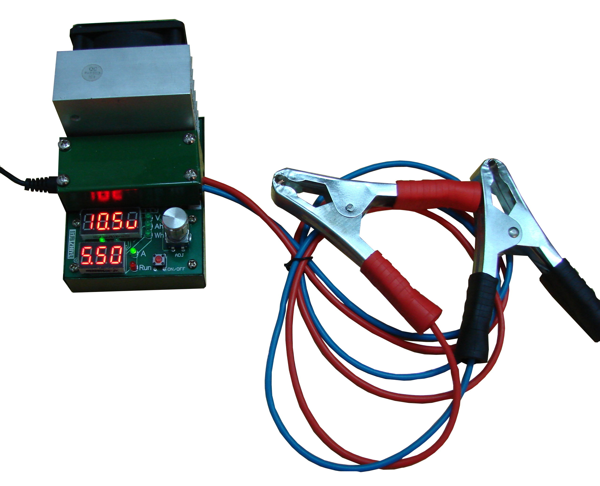

Для перехода щелкните по ссылке на желтом фоне:
Испытательные нагрузочные приборы для проверки аккумуляторов и аккумуляторных батарей
Смотреть подробно:
(для перехода щелкните по ссылке или по картинке)
Испытательный нагрузочный прибор ИНП-110

Испытательный нагрузочный прибор ИНП-110 предназначен для определения фактической емкости (в Ач) всех видов аккумуляторов и
аккумуляторных батарей (кислотных, щелочных, гелевых и т. п.) напряжением от 1 до 30 В, током нагрузки от 0,2 до 9,99 А (ток нагрузки
автоматически ограничивается мощностью 110 Вт).
Прибор может использоваться для тестирования различных источников постоянного тока - солнечных батарей, генераторов и т .п.
Испытательный нагрузочный прибор ИНП-А-24-12
Испытательный нагрузочный прибор модели ИНП-А-24-12 предназначен для проверки
работоспособности кислотных свинцовых аккумуляторных батарей типа 12-САМ-28 и 12-САМ-55.
- Вольтметр с пределами измерений 0-30 В, кл. точности 1,5;
- Амперметр с пределами измерений 0-20 А, кл. точн. 1,5;
- Шунт измерительный 20 А, кл. точн. 0,5.
- Сопротивление прибора 2,0 Ом.
Для перехода щелкните по ссылке на желтом фоне: